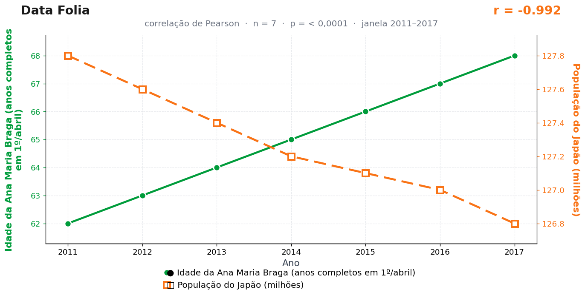

Post de 17/08/2026
A teoria
A televisão da manhã transforma idade em ritual público. O aniversário de Ana Maria Braga não é apenas data pessoal; é marcação nacional do tempo passando com café, bolo e audiência.
O Japão, país que acompanha de perto a longevidade e a envelhecimento da população, responde ao mesmo relógio simbólico. Cada celebração brasileira ilumina a o envelhecimento do país em escala maior.
A ligação é temporal. No estúdio, uma pessoa soma anos diante do país; no Japão, a população traduz o mesmo movimento em estatística de longo prazo. O bolo e a envelhecimento pertencem ao mesmo calendário.
Nenhum bolo foi poupado na produção desta análise. O Japão, procurado por meio dos canais competentes, seguiu envelhecendo — o que a redação interpretou como resposta afirmativa.
A teoria é ficção; a correlação é real: r = −0,99 (n = 7, p < 0,001).
Os dados por trás

- Idade da Ana Maria Braga (anos completos em 1º/abril) — 7 pontos anuais, período 2011–2017. Fonte: Biografia oficial (1° abril 1949).
- População do Japão (milhões) — 7 pontos anuais, período 2011–2017. Fonte: World Bank / Statistics Japan.
Como as correlações deste site são encontradas — e por que você não deve confiar nelas — está explicado na nossa metodologia.
Por que isso acontece?
A idade de Ana Maria Braga sobe exatamente um ano por ano: é uma reta perfeita, sem ruído, por definição do calendário. A população do Japão, no período, cai de forma quase perfeitamente linear (127,8 → 126,8 milhões, um degrau parecido a cada ano). A correlação entre duas retas é sempre 1 ou −1; entre duas quase-retas, sai 0,99. O resultado estava garantido antes de qualquer dado ser coletado.
Este é o exemplo mais puro do arquivo: a idade de qualquer pessoa viva — a sua, inclusive — apresenta correlação quase perfeita com toda série que tenha tendência estável, do preço do leite à altura média dos edifícios de Xangai. O "terceiro fator" que liga as duas curvas é simplesmente a passagem do tempo.
Por isso estatísticos tratam correlações entre séries temporais com tendência como suspeitas por padrão: antes de calcular o r, remove-se a tendência (trabalhando com as variações ano a ano, por exemplo). Feito isso aqui, sobra nada — nem bolo, nem demografia.
Post de 17/08/2026 · publicado também no Instagram @datafolia.